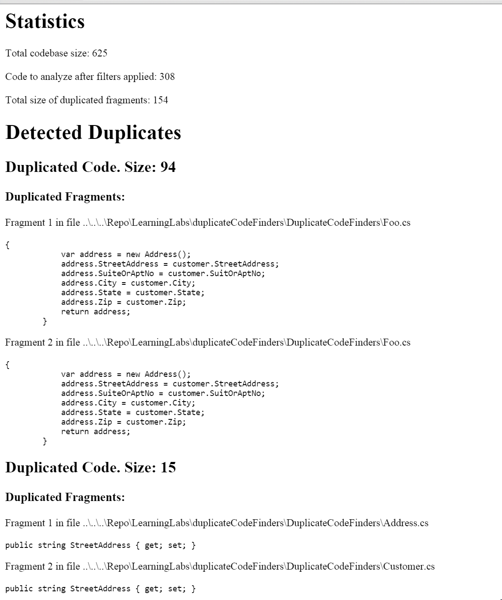
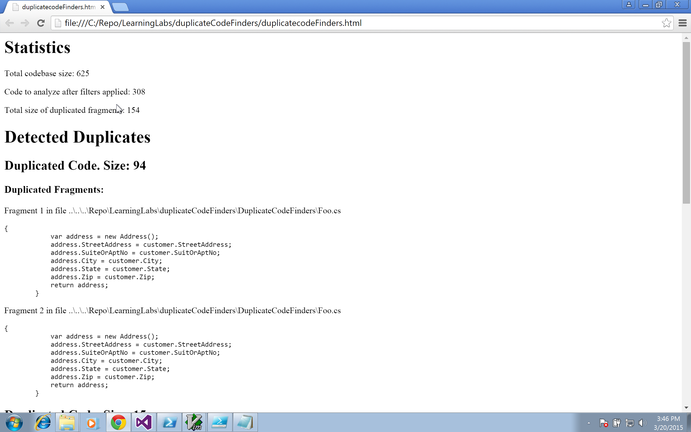
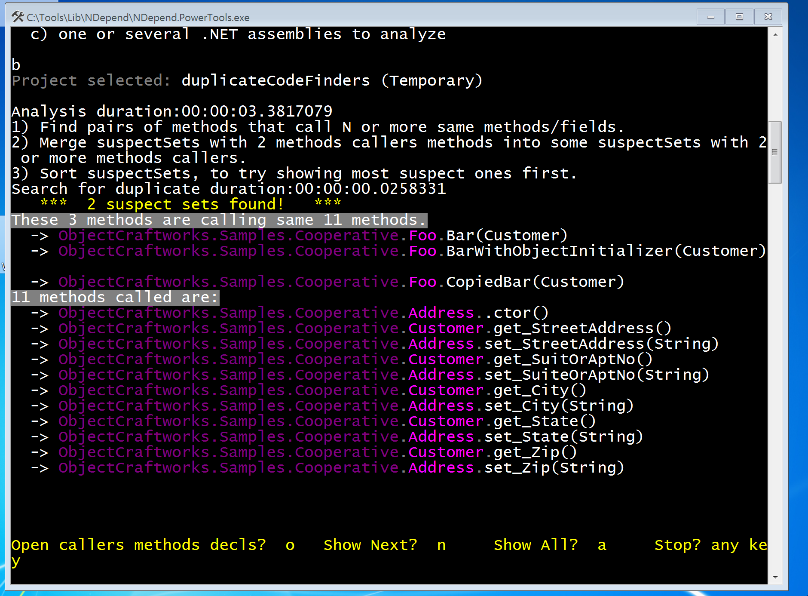

Duplicated code, left unchecked, becomes a maintenance nightmare. Periodic code reviews can help keep tabs on duplicates. In addition to code reviews, duplicated code finding tools are useful to gather the data. We will cover in this post what we can gain from this data, and the tools to collect it.
Duplicates are the symptoms
It may be economical to reuse a piece of working code, but not by making copies. These copies, if designed properly, can find their place in the family of objects. Kent Beck writes in his TDD by Example book that the duplication is the symptom of the dependency. Sure, the design patterns give us the language to discover these participating objects, and their collaborations. Unless the team has the right skill level and looks rigorously for the duplicates, they pile up and age the system. For experienced or just starting, the data can act as a feedback loop in finding the missing collaborators.
Consider the Context
But all copies are not duplicates. We need to consider their contexts. It may not be as simple as creating a static utility class to house a snippet for the reuse. This approach mostly comes in the way by obscuring the abstractions. But this delegation approach is better than moving the code to base classes bloating the hierarchy with unrelated responsibilities. Beware of the cost associated with the reuse that spans across the teams.
Slow down to Design
As duplication is a design smell, it is time to think and design. It is hard to slow down under the typical schedule pressure. But it is worth the time, any effort in this matter will pay back and improve your crafting skills.
For TDD practitioners, removing duplication is a disciplined effort. TDD cycles, Red/Green/Refactor, allow you to take the time to think and make strategic design decisions.
The best way to find the duplicates as you are writing the code is cultivating the habit of looking for them. It is better to do after getting the tests pass i.e. in the green state. If you are not doing TDD, then you could do after your code gets OK’d by the some form of testing before calling the story done.
Tools to get the data
When the team has not yet thoroughly adapted the TDD practice, or is working with a legacy codebase, or managing entire codebase, duplicate finders are handy.
There are three duplicate finders Visual Studio code clone detection, dupFinder from Resharper, and Power Tools from NDepend. We will cover last two tools. The Visual Studio's feature is available only in the ultimate and premium editions. Finding the duplicate code is not an exact science. These tools bring the possible candidates to the forefront, and you need to identify potential duplicates.
Let’s take a class Foo with two duplicate methods, Bar and Copied Bar, that create an address object from a customer.
class Foo
{
Address Bar(Customer customer)
Address CopiedBar(Customer customer)
//Exact copy of Bar
}
Resharper's dupFinder
Let’s start with Resharper’s dupFinder:
You can download the command line tools from here. Check out JetBrains’ blog post for the command line parameters.
You can run the command line or use my PowerShell script that runs the command, and transforms the output XML to HTML (using XSL stylesheet which is in the same folder). Here is the report:

You can control the matching by using discard-XXX parameters.
For example, /discard-literal=true argument will bring following as duplicates discarding the values while matching.
address.StreetAddress ="1 Way"
address.StreetAddress ="Other way"
But it has limitations in matching the copies. Let’s add another copy of the Bar, but with a twist. This time, we will use object initializer syntax.
public Address BarWithObjectInitializer(Customer customer)
{
return new Address
{
StreetAddress = customer.StreetAddress,
SuiteOrAptNo = customer.SuitOrAptNo,
City = customer.City,
State = customer.State,
Zip = customer.Zip
};
}
Instead of three fragments, it matches only two as seen in the following report.

NDepend's Power Tools
Let’s look at the other tool, NDepend's Power Tools. These tools are based on NDepend API, and are open sourced. Let’s run their duplicate finder on our sample. It brings all the three methods (as seen in the screenshot below) as duplicates.

If you are interested to know how it determines the clones, you can read a post by Patrick Smacchia of NDepend team.
The team can share reports the dupFinder generates. Depending on your team coding styles, you might miss some potential candidates. The plugin itself is good, and can improve your productivity. I imagine most of the developers using it these days. You can watch my TDD overview screencast for its use in TDD cycles.
As NDepend works on the IL code, it is hard to miss any clones. As a static code analysis tool, NDepend offers a rich feature set to manage the code. With this tool, you can query the codebase using its LINQ like query capabilities. For example, you can write a query to answer this question, Is there any class that has fields of IDisposable type, but not implementing IDisposable?.
I like to see the features such as finding duplicates in a given namespace or between namespaces, and IDE integration.
Both plugins offer trail version.
Key points covered:
- Use tools to find the code duplicates.
- Consider the context.
- Use the data of duplicated code to discover missing dependencies.
Attribution: Thanks to Vincent_AF for the pattern image.